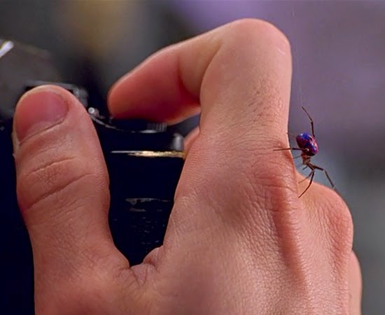

Origem do herói
O Homem-Aranha surgiu nos quadrinhos da Marvel em 1962. Sua identidade mais conhecida é Peter Parker, um jovem que ganha habilidades especiais após ser picado por uma aranha radioativa em muitas versões de sua história.

Depois de enfrentar uma perda pessoal, Peter compreende a importância de usar suas habilidades para ajudar os outros. A responsabilidade é um dos principais temas de suas aventuras.